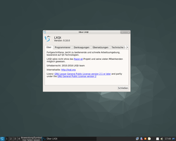
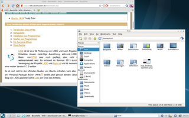
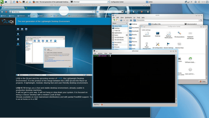
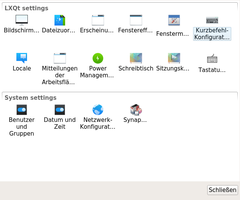

LXQt
Hinweis:
LXQt und die Integration in Lubuntu befinden sich noch in Entwicklung! Dieser Artikel erfordert mehr Erfahrung im Umgang mit Linux und ist daher nur für fortgeschrittene Benutzer gedacht.
Dieser Artikel wurde für die folgenden Ubuntu-Versionen getestet:
Ubuntu 16.04 Xenial Xerus
Ubuntu 14.04 Trusty Tahr
Zum Verständnis dieses Artikels sind folgende Seiten hilfreich:
LXQt  ist eine Portierung von LXDE auf die Grafikbibliothek Qt und nach Angaben der Entwickler dessen zukünftige Ausrichtung. Es entstand im Sommer 2013 durch die Vereinigung der Projekte LXDE und Archiv/Razor-qt. Ein knappes Jahr später wurde die erste öffentlich verfügbare Testversion vorgestellt. LXDE auf Basis von GTK 2 wird zwar noch gepflegt, aber nicht mehr weiterentwickelt.
ist eine Portierung von LXDE auf die Grafikbibliothek Qt und nach Angaben der Entwickler dessen zukünftige Ausrichtung. Es entstand im Sommer 2013 durch die Vereinigung der Projekte LXDE und Archiv/Razor-qt. Ein knappes Jahr später wurde die erste öffentlich verfügbare Testversion vorgestellt. LXDE auf Basis von GTK 2 wird zwar noch gepflegt, aber nicht mehr weiterentwickelt.
LXQt benötigt etwas mehr Arbeitsspeicher (RAM) als der Vorgänger LXDE. Daher gilt auch hier: weniger als 512 MiB RAM sind nicht empfehlenswert, in der Praxis darf es auch gerne deutlich mehr sein. Damit liegen die Hardwareanforderungen in etwa auf dem Niveau von Xfce bzw. leicht darüber. So reiht sich LXQt wie MATE ins Mittelfeld ein, was die benötigten Systemressourcen betrifft.
|  |
| LXQt-Desktop 16.04 |
Versionen¶
Die Version 0.7 aus dem Jahr 2014 basierte noch auf Qt 4, während 0.8 sowohl Qt 4 als auch Qt 5 unterstützte. Neuere Versionen nutzen ausschließlich Qt 5, das auch bei KDE 5.x verwendet wird. Aktuell ist derzeit die Version 0.12.0 (Stand: 21. Oktober 2017). Aktuelle Informationen zum Entwicklungsstand sind über die Projektseite erhältlich.
Installation¶
 Als Ausgangsbasis kann theoretisch jede beliebige Ubuntu-Variante verwendet werden. Empfohlen wird allerdings:
Als Ausgangsbasis kann theoretisch jede beliebige Ubuntu-Variante verwendet werden. Empfohlen wird allerdings:
Eine möglichst aktuelle Ubuntu-Version und
eine Minimalinstallation, bei der dann LXQt nachinstalliert wird, um ein möglichst schlankes System zu erhalten.
Ab Ubuntu 16.10¶
Seit Ubuntu 16.10 steht ein Metapaket [1] in den offiziellen Paketquellen zur Verfügung [2]:
lubuntu-qt-desktop (universe)
 mit apturl
mit apturl
Paketliste zum Kopieren:
sudo apt-get install lubuntu-qt-desktop
sudo aptitude install lubuntu-qt-desktop
Das Metapaket installiert bereits einige Anwendungen wie z.B. den Browser Qupzilla, den Dateimanager PCManFM-Qt oder den PDF-Betrachter qpdfview.
Ubuntu 16.04¶
Unter Ubuntu 16.04 muss folgendes Metapaket installiert werden:
lxqt (universe)
openbox (universe, siehe Fenstermanager weiter unten)
mit apturl
Paketliste zum Kopieren:
sudo apt-get install lxqt openbox
sudo aptitude install lxqt openbox
Auch über dieses Metapaket werden einige Anwendungen mitinstalliert (siehe oben). Optional können weitere Qt-Anwendungen installiert werden (siehe auch Programme am Ende des Artikels):
juffed (universe, Editor)
nomacs (universe, Bildbetrachter)
quassel (universe, IRC-Client)
qtpass (universe, Passwortmanager)
vokoscreen (universe, Screencast-Rekorder)
mit apturl
Paketliste zum Kopieren:
sudo apt-get install juffed nomacs quassel qtpass vokoscreen
sudo aptitude install juffed nomacs quassel qtpass vokoscreen
PPA¶
Für ältere Ubuntu-Version kann ein "Personal Package Archiv" (PPA) [3] genutzt werden. Derzeit gibt es zwei PPAs (Stand: Mai 2016).
Entwickler-PPA¶
LXQt kann über ein PPA der Lubuntu-Entwickler installiert werden. Diese Paketquelle wird auf einer täglichen Basis gepflegt, was bedeutet, dass es kurzfristig immer zu Installationsproblemen kommen kann (z.B. weil sich Abhängigkeiten zwischen den Paketen ohne Vorwarnung ändern können).
Adresszeile zum Hinzufügen des PPAs:
ppa:lubuntu-dev/lubuntu-daily
Hinweis!
Zusätzliche Fremdquellen können das System gefährden.
Ein PPA unterstützt nicht zwangsläufig alle Ubuntu-Versionen. Weitere Informationen sind der  PPA-Beschreibung des Eigentümers/Teams lubuntu-dev zu entnehmen.
PPA-Beschreibung des Eigentümers/Teams lubuntu-dev zu entnehmen.
Damit Pakete aus dem PPA genutzt werden können, müssen die Paketquellen neu eingelesen werden.
Nach dem Aktualisieren der Paketquellen erfolgt die Installation auch hier über ein Metapaket, während ein Panel und ein Fenstermanager (in diesem Fall Openbox zusätzlich angegeben werden müssen:
lxqt-metapackage (ppa)
lxqt-panel (ppa)
openbox (universe)
mit apturl
Paketliste zum Kopieren:
sudo apt-get install lxqt-metapackage lxqt-panel openbox
sudo aptitude install lxqt-metapackage lxqt-panel openbox
Neben den Paketen von LXQt werden über das Metapaket bzw. das PPA noch die folgenden Programme zur Verfügung gestellt:
Außerdem werden noch passende Symboldesigns (Icon-Themes) und Einstellungen geladen. Da sich LXQt noch in Entwicklung befindet, gibt es häufig Updates und es kommen auch zusätzliche Pakete mit dazu. Deswegen empfiehlt es sich, ab und zu das Metapaket erneut zu installieren, um diese neuen Pakete zu erhalten:
sudo apt-get install --reinstall lxqt-metapackage
Alternatives PPA¶
Konservativer gepflegt (durch die Beschränkung auf stabile Komponenten) wird ein zweites PPA. Angeboten wird LXQt v0.11 für Ubuntu 16.04 oder neuer.
Adresszeile zum Hinzufügen des PPAs:
ppa:lxqt/ppa
Hinweis!
Zusätzliche Fremdquellen können das System gefährden.
Ein PPA unterstützt nicht zwangsläufig alle Ubuntu-Versionen. Weitere Informationen sind der PPA-Beschreibung des Eigentümers/Teams lxqt zu entnehmen.
Damit Pakete aus dem PPA genutzt werden können, müssen die Paketquellen neu eingelesen werden.
Nach dem Aktualisieren der Paketquellen erfolgt die Installation über folgende Pakete:
albert (ppa)
cmst (ppa)
compton (ppa)
compton-conf (ppa)
juffed (ppa)
lximage-qt (ppa)
lxqt-admin (ppa)
lxqt-common (ppa)
lxqt-config (ppa)
lxqt-globalkeys (ppa)
lxqt-notificationd (ppa)
lxqt-openssh-askpass (ppa)
lxqt-panel (ppa)
lxqt-policykit (ppa)
lxqt-powermanagement (ppa)
lxqt-qtplugin (ppa)
lxqt-runner (ppa)
lxqt-session (ppa)
lxqt-sudo (ppa)
obconf-qt (ppa)
openbox (ppa)
pcmanfm-qt (ppa)
qlipper (ppa)
qps (ppa)
qterminal (ppa)
screengrab (ppa)
trojita (ppa)
sddm (ppa)
mit apturl
Paketliste zum Kopieren:
sudo apt-get install albert cmst compton compton-conf juffed lximage-qt lxqt-admin lxqt-common lxqt-config lxqt-globalkeys lxqt-notificationd lxqt-openssh-askpass lxqt-panel lxqt-policykit lxqt-powermanagement lxqt-qtplugin lxqt-runner lxqt-session lxqt-sudo obconf-qt openbox pcmanfm-qt qlipper qps qterminal screengrab trojita sddm
sudo aptitude install albert cmst compton compton-conf juffed lximage-qt lxqt-admin lxqt-common lxqt-config lxqt-globalkeys lxqt-notificationd lxqt-openssh-askpass lxqt-panel lxqt-policykit lxqt-powermanagement lxqt-qtplugin lxqt-runner lxqt-session lxqt-sudo obconf-qt openbox pcmanfm-qt qlipper qps qterminal screengrab trojita sddm
Fenstermanager¶
LXQt bringt selbst keinen Fenstermanager mit, sondern arbeitet mit anderen zusammen. Ist bereits ein Fenstermanager installiert, verwendet LXQt diesen automatisch. Über die Einstellungen lässt sich der Fenstermanager ändern. Anschließend ist eine erneute Anmeldung erforderlich, um ihn zu aktivieren. Empfohlen wird Openbox, da dieser passend zum Desktop wenig Ressourcen benötigt.
|  |
| LXQt mit Openbox als Fenstermanager |
|  |
| LXQt mit KWin als Fenstermanager |
Openbox¶
Dieser Fenstermanager verzichtet bewusst auf jegliche optischen Spielereien. Um trotzdem in den Genuss von Desktop-Effekten zu kommen, benötigt man einen zusätzlichen Composite-Manager wie z.B. Compton oder weicht auf einen Fenstermanager aus, der Compositing bereits integriert hat. Informationen zur Installation und viele weitere Hinweise sind im Artikel Openbox enthalten.
KWin¶
Bietet der vorhandene Rechner etwas mehr Leistung, kann man auch KWin, den Standard-Fenstermanager von KDE, verwenden. Dieser beherrscht im Gegensatz zu Openbox von Haus aus Desktop-Effekte. Details zu Installation und Konfiguration sind im Artikel LXDE Fenstermanager wechseln enthalten.
Einstellungen¶
|  |
| Konfigurationszentrum |
Wer LXQt anpassen möchte, findet die integrierten Werkzeuge im Anwendungsmenü unter
"Einstellungen -> LXQt-Systemeinstellungen"
Für weitere Systemeinstellungen wie z.B. einen Bildschirmschoner, die Druckerkonfiguration oder eine Paketverwaltung greift LXQt auf vorhandene Programme zurück. Dementsprechend enthält der Menüpunkt "Einstellungen" weitere, nicht LXQt-spezifische Werkzeuge. Das "Konfigurationszentrum" fasst beide Bereiche zusammen, untergliedert in LXQt- und Systemeinstellungen.
Wer Symbole auf dem Desktop nutzen möchte, folgt der Anleitung im Artikel Desktop-Symbole.
Programme¶
Da LXQt auf Qt aufbaut, empfiehlt es sich, bei der praktischen Nutzung auch andere Programme auf Qt-Basis einzusetzen. Es sei nochmal darauf hingewiesen, dass Qt und Programme auf Qt-Basis keine Abhängigkeiten zu KDE besitzen, aber speziell das Büropaket Calligra nicht ohne KDE-Bibliotheken auskommt. Beispiele:
Browser: Qupzilla
E-Mail: Trojitá
Audioplayer: Clementine, qmmp, Musique, Sayonara
, Tomahawk, YarockPDF-Betrachter: qpdfview
Bildbetrachter: lxde/lximage-qt (integriert), nomacs, PhotoQt, Phototonic
Bildbearbeitung: Krita
Bildverwaltung: digiKam
Office: Calligra
Bittorrent: qBittorrent, Transmission (speziell das Paket transmission-qt)
Taschenrechner: Speedcrunch
Notizen: zNotes
Mehr Programme findet man in den folgenden Listen:
Problembehebung¶
Viele der oben genannten Programme basieren noch auf Qt 4, während LXQt inzwischen Qt 5 nutzt. Das ist prinzipiell kein Problem, allerdings müssen dann beide Versionen der Grafikbibliothek installiert sein/werden.
Ähnlich verhalten sich GTK-Anwendungen, die zwar auf Anhieb funktionieren, deren Optik aber durch die Installation des gewünschten Designs erst noch angepasst werden muss (siehe auch GTK+ Anwendungen unter KDE).
Links¶
Wiki
- Dokumentation und AnleitungenBlog der Entwickler
- aktuelle Informationen zu LXQt und LXDE
Schlanker und freier Desktop: LXQt Version 0.11 erschienen
 - heise open, 09/2016
- heise open, 09/2016How to Install LXQt 0.9.0 Desktop Environment in Ubuntu
- Blogbeitrag, 03/2015Qt-Apps.org - Übersicht zu Qt-Programmen
LXDE
 Übersichtsartikel
Übersichtsartikel
- Erstellt mit Inyoka
-
 2004 – 2017 ubuntuusers.de • Einige Rechte vorbehalten
2004 – 2017 ubuntuusers.de • Einige Rechte vorbehalten
Lizenz • Kontakt • Datenschutz • Impressum • Serverstatus -
Serverhousing gespendet von